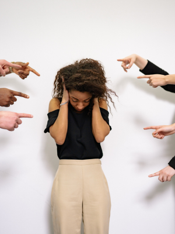

ODS 5 DA ONU
O QUÊ É GENÊRO?
Antes de aprofundarmos na proposta do Objetivo 5 de Desenvolvimento Sustentável da ONU, precisamos entender o conceito de “gênero”.
De modo geral, para as Ciências Sociais, o gênero se refere a um conjunto de atributos particulares da masculinidade e da feminilidade. Nesse sentido, entende-se que o gênero é uma construção social que não decorre de aspectos naturais. Em outras palavras, as características sociais entre homens e mulheres, que definem os seus papéis e responsabilidades dentro de uma sociedade, não são estabelecidas pelo sexo – como determinação biológica – mas influenciadas pela cultura.
DESIGUALDADE DE GÊNERO
A desigualdade de gênero ocorre quando há privilégio de um gênero em detrimento de outro, ou outros. Historicamente, os direitos e vontades do homem se sobrepuseram aos das mulheres. Os homens trabalhavam fora, tomavam as decisões e impunham suas vontades às suas esposas e filhos. Entretanto, desde crianças, também fomos ensinados a diferenciar as pessoas pelo gênero, o que reforça o preceito de que é preciso rotular as pessoas e, consequentemente, prejulgá-las.
A desigualdade de gênero é um problema antigo que perdura até os dias atuais. Desde os primórdios da humanidade, a maioria dos povos caminhou para o desenvolvimento de sociedades patriarcais, em que o homem detinha o poder de decisão sobre a família. Esse modelo foi transposto do âmbito familiar privado para o âmbito público, fazendo com que sistemas políticos se desenvolvessem pelo comando masculino.
Durante muito tempo, a mulher foi excluída da participação efetiva nos espaços públicos, do trabalho fora do âmbito doméstico e da possibilidade de desenvolvimento científico e intelectual por meio da educação formal, além de estarem submetidas ao poder de homens de sua família, em geral seus pais e maridos. Isso acarretou num problema que urge por solução: a desigualdade fundamentada pelo gênero.
CAUSAS
Desde o início da humanidade, o homem utilizou de sua força física para dominar as relações sociais. Esse domínio começou no âmbito familiar privado e estendeu-se ao âmbito público com o passar do tempo. As mulheres ficaram sob o domínio de homens, e os espaços públicos relativos ao comércio, às empresas, à política e às ciências foram dominados quase que exclusivamente por eles até o século XX. Aí está a gênese da desigualdade de gênero.
Durante muito tempo, a mulher foi privada de ter acesso à educação formal, de trabalhar fora de casa e de ter autonomia sobre suas vidas e sobre seus corpos. Enquanto solteiras, as mulheres ficavam sob o domínio de seus pais ou tutores legais, e depois de casadas, eram subordinadas aos maridos.
Enquanto os homens trabalhavam fora, tinham direitos políticos e podiam estudar, as mulheres cuidavam da casa e dos filhos. A superioridade financeira masculina potencializava a dependência da mulher e limitava o seu poder de escolha. Infelizmente, a percepção coletiva de que essa formação social está errada demanda muitos fatores, tornando o processo lento.
Muitos fatores estão intrínsecos na cultura. Algumas causas da desigualdade de gênero abrangem a existência e perpetuação de conceitos normativos, que reforçam a necessidade de rotular pessoas e estabelecer uma divisão entre homens e mulheres, principalmente.
CONSEQUÊNCIAS
Qualquer forma de desigualdade afeta a sociedade. Desigualdades sociais, raciais e de gênero afetam profundamente as relações sociais e impedem um traço imperativo das revoluções sociais modernas que prezam pela liberdade, pela igualdade, pela democracia e pela garantia de direitos. Como uma sociedade pode ser democrática se não há tratamento igual entre mulheres e homens? Quando uma sociedade privilegia uns e discrimina outros, há uma enorme perda nos aspectos sociais, políticos, intelectuais e econômicos.
Uma matéria do site Época Negócios (2018) expressou dados sobre a desigualdade de gênero no mundo em diferentes aspectos:
- Quanto à desigualdade de gênero no mercado de trabalho, foram analisadas 449 ocupações nos Estados Unidos, e, em 439 delas, mulheres ganham menos que homens. A média no país é de 0,78 centavos de dólar ganho por mulheres para cada dólar ganho por homens. No mundo, essa média fica em 0,50 centavos de dólar para as mulheres para cada dólar remunerado a homens.
- As mulheres trabalham dentro e fora de casa. A mulher italiana média trabalha cerca de 22 horas semanais em afazeres domésticos, o que dariam três jornadas de trabalho no país. Esse trabalho não remunerado geraria uma receita de aproximadamente 10 trilhões de dólares anuais, o que corresponde a 13% do PIB global.
- No mundo corporativo, os homens são maioria em cargos de chefia, além de ganharem uma média salarial maior para desempenhar a mesma função que as mulheres, apesar dessas buscarem mais estudos e qualificação.
Conforme dados de pesquisa do Fórum Econômico Mundial de 2019, a equidade de gênero no mercado de trabalho só será alcançada daqui a 257 anos se permanecermos no ritmo atual.
Porém, a cultura discriminatória entre gêneros não abrange apenas a empregabilidade e ganhos financeiros, ela submete a mulher a diversas formas de violência: física, psicológica, sexual, patrimonial, etc.
A desigualdade de gênero é um dos principais motivos da banalização de situações atrozes, como o estupro. Desde o Brasil colonial, índias, escravas e muitas mulheres em vários segmentos da pirâmide social sofreram — e ainda sofrem — com esse tipo de violência.
As concepções sociais sobre a representação da masculinidade induzem a ideia de que os “homens são superiores”. Desse modo, cria-se um modelo de “dominação masculina” que é incentivado desde a infância, como descrevia o antropólogo Pierre Bourdieu, o qual induz o indivíduo a demonstrar a sua força de supremacia e controle contra outros dotados de virilidade sensível. Portanto, o pensamento social machista legitima o uso da violência como justificativa para afirmar ou reafirmar a posição hierárquica de superioridade.
COMO ESTÁ O BRASIL?
A igualdade entre homens e mulheres no Brasil foi consagrada na Constituição de 1988. Desde então, têm sido desenvolvidas políticas públicas e legislação específica para mulheres no âmbito político, no mercado de trabalho e no ambiente doméstico. Há avanços e uma ampliação da participação feminina em todas as esferas, mas ainda há muitos obstáculos a superar para que igualdade promulgada em lei seja plenamente efetiva na sociedade brasileira.
Em 2019, conforme o Fórum Econômico Mundial, o Brasil ocupava a 92ª posição em um ranking que mede a igualdade entre homens e mulheres num universo de 153 países. As mulheres brasileiras estão sub-representadas na política, têm remuneração menor, sofrem mais assédio e estão mais vulneráveis ao desemprego.
No Brasil, mesmo com as cotas partidárias obrigatórias — a lei estabelece que cada partido deve ter no mínimo 30% e no máximo 70% de candidatos por gênero —, a aplicação da proporção fica limitada ao voto público e com o machismo estrutural, muitas mulheres não são eleitas.
O Brasil é signatário da Agenda 30 da Organização das Nações Unidas (ONU), a qual contem os 17 Objetivos de Desenvolvimento Sustentável. No entanto, o nosso país ocupa o 5° lugar no ranking de homicídio de mulheres e, somente no ano de 2017, foram registradas mais de 260 000 agressões a pessoas em razão de sua identidade de gênero. Segundo a Organização Mundial da Saúde (OMS), o Brasil é o quinto país do mundo em número de feminicídios.
Recentemente, foi promulgada no dia 3 de Julho de 2023, a Lei 14.611/23, a qual visa a garantia de salários iguais e de critérios remuneratórios entre homens e mulheres no exercício da mesma função, ou que realizam trabalho de igual valor.
A nova lei estabelece a obrigatoriedade da igualdade salarial e remuneratória entre homens e mulheres. O texto inclui o aumento da multa para empresas que descumprirem a norma, bem como a previsão de indenização por danos morais e a equiparação de remuneração por decisão judicial liminar.
O objetivo principal da Lei é promover a igualdade de gênero no mercado de trabalho e reduzir a desigualdade salarial entre homens e mulheres. A medida visa também garantir a proteção dos direitos das mulheres e combater a discriminação no ambiente de trabalho, beneficiando 54.308.193 de brasileiras.